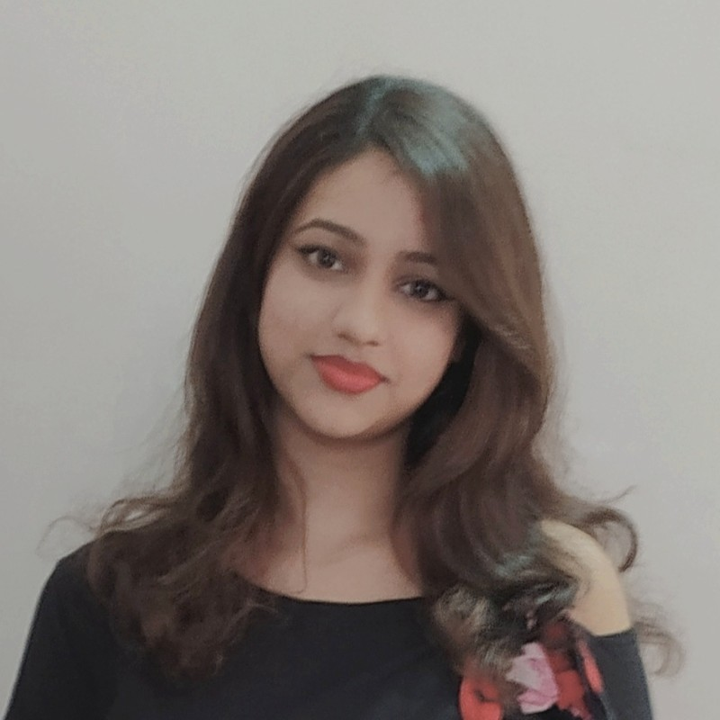

Curriculam Vitae |

|
Fabliha Hasnin Duti
CSE Student
Baridhara DOHS, Dhaka
fabliha.hasnin@gmail.com
linkedin.com/in/fablihahasnin
|
Education
American International University of Bangladesh - (2021 - present)
B.Sc in CSE | CGPA - 3.65 (Ongoing)
Bangladesh Navy School & College, Dhaka - 2019
HSC | GPA - 4.33
Monipur High School & College, Dhaka - 2017
SSC | GPA - 5.00
|
Projects
Hospital Management System - Dec 2021
- Made with JDK
- Features: Doctor, patient & cabin Management, Showing hospital information
|
Skills
Language
Bangla - Native | English - Fluent
Technical Skills
C, C++, JAVA basics, C#
Soft Skills
Presentation, Anchoring, Leadership
|
Reference
MD Mashiul Azam Chowdhury
Jr, Software Engineer - Astha IT
Phone: +8801916590193
|
Maisha Hasnin
UX Designer - Pathao
Phone: +8801856565601
|
|